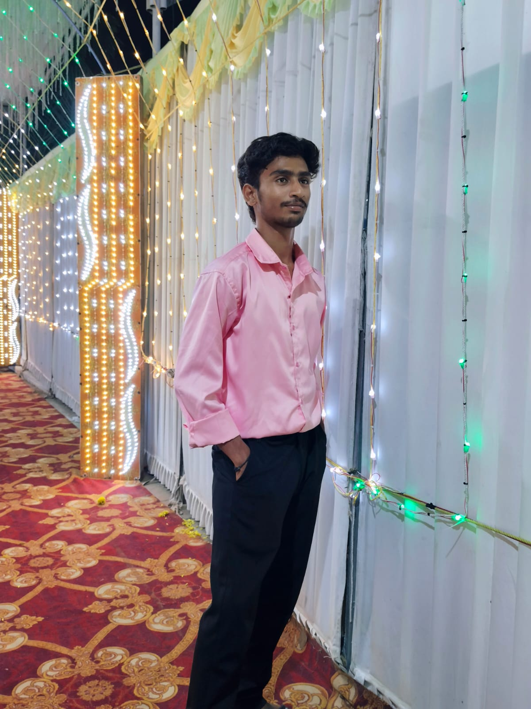

B.Tech AI & Data Science student passionate about building AI-powered web applications and real-world solutions.

I am a B.Tech student specializing in Artificial Intelligence and Data Science with hands-on experience in building AI-powered and full-stack web applications. I have worked on computer vision projects, RESTful APIs using Flask and Node.js, and contributed to multiple open-source projects including UNICEF Bebbo, JdeRobot RoboticsAcademy, ML4SCI (Stingray), and OpenAstronomy.
My interests lie in AI/ML, full-stack development, and building scalable solutions that solve real-world problems. I recently presented a research paper on "Automatic Detection of Temple & Gopuram Carvings using Deep Learning" at ICCVIP-26.
CGPA: 7.71 / 10
Developed AI-based image classification models for livestock (buffalo vs cattle) and fruit types using CNNs and computer vision, integrated into a Flask web app for real-time prediction.
Tech: Python, Flask, TensorFlow, Keras, OpenCV, HTML/CSS/JS
View on GitHubBuilt a real-time face recognition attendance system that auto-detects faces from a live camera feed and logs attendance with timestamps using DeepFace for robust recognition across varying lighting conditions and angles.
Tech: Python, OpenCV, DeepFace, Flask, Pandas
View on GitHubBuilt a Flask REST API backend with a dynamic frontend filtering crop data by location and season, with a responsive Bootstrap UI helping farmers explore suitable crops for their region.
Tech: Python, Flask, HTML/CSS, JavaScript, Bootstrap, Pandas
View on GitHubPython, Java, JavaScript, TypeScript, SQL
Flask, React, React Native, Node.js, Express, Bootstrap, TensorFlow, Keras, PyTorch, OpenCV
MongoDB, PostgreSQL
Docker, Git, GitHub, VS Code, Jupyter, Render
Deep Learning, Computer Vision, Convolutional Neural Networks, REST APIs
Authored a Windows environment setup guide for Android builds (React Native). PR #1045 merged.
Tech: React Native, Git, GitHub
View PRSet up the robotics simulation environment and implemented the Follow Line simulation.
Tech: Robotics, Simulation
View on GitHubSubmitted PR #923 adding and validating a TOA calculation notebook compatible with the latest library dependencies.
Tech: Python, Jupyter
View PRPrepared GSoC proposals for astronomy-related machine learning projects.
Tech: Python, ML, Astronomy
View on GitHubIf you’d like to connect or discuss opportunities, feel free to reach out.